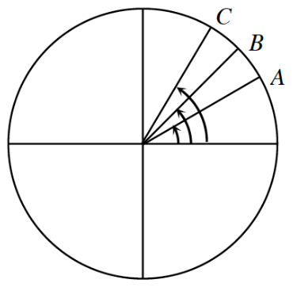
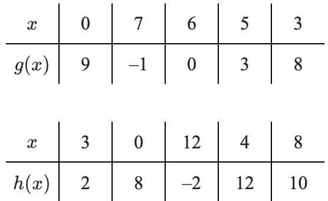

<!DOCTYPE html>
<html lang="en">
<head>
<meta charset="UTF-8">
<meta name="viewport" content="width=device-width, initial-scale=1.0">
<title>1_3_3.html</title>

<!-- ====================================================== -->
<!-- MATHJAX -->
<!-- Exact setup based on the user's uploaded Section X.X file -->
<!-- ====================================================== -->
<script>
window.MathJax = {
  tex: {
    inlineMath: [['$', '$'], ['\\(', '\\)']],
    displayMath: [['$$', '$$'], ['\\[', '\\]']]
  }
};
</script>
<script async src="https://cdn.jsdelivr.net/npm/mathjax@3/es5/tex-mml-chtml.js"></script>

<!-- ====================================================== -->
<!-- STYLES -->
<!-- LOCKED / FROZEN FROM 1_1_1.html -->
<!-- Added per user request: .figure-full img{ max-width:100%; } -->
<!-- ====================================================== -->
<style>
/* =======================
   RESET
   ======================= */
*{
  margin:0;
  padding:0;
  box-sizing:border-box;
}

/* =======================
   PAGE
   ======================= */
body{
  font-family:'Segoe UI', Tahoma, Geneva, Verdana, sans-serif;
  line-height:1.55;
  color:#222;
  background:#fff;
  padding:20px;
}

.container{
  max-width:900px;
  margin:0 auto;
}

/* print color support */
-webkit-print-color-adjust: exact;
print-color-adjust: exact;

/* =======================
   PAGE BREAK HELPERS
   ======================= */
.page-break{
  page-break-before:always;
}

/* =======================
   HEADINGS
   ======================= */
h1{
  color:#00003d;
  font-size:2rem;
  margin-bottom:8px;
}

h2{
  color:#00003d;
  font-size:1.5rem;
  margin-top:10px;
  margin-bottom:10px;
  border-left:5px solid #00003d;
  padding-left:10px;
}

h3{
  color:#004d99;
  font-size:1.15rem;
  margin-top:4px;
  margin-bottom:10px;
}

/* =======================
   INTRO / LABEL TEXT
   ======================= */
.intro-text{
  font-size:1rem;
  color:#555;
  margin-bottom:14px;
}

.section-label{
  background:#eaf1fb;
  border:1px solid #a9b9cf;
  color:#22354d;
  font-weight:700;
  font-size:0.95rem;
  padding:8px 12px;
  margin:18px 0 10px 0;
  border-radius:4px;
}

.review-preview-label{
  background:#f7f0cf;
  border:1px solid #c7bb8c;
  color:#4a3f17;
  font-weight:700;
  font-size:0.95rem;
  padding:8px 12px;
  margin:18px 0 10px 0;
  border-radius:4px;
}

/* =======================
   LESSON HEADER
   ======================= */
.lesson-header{
  margin-bottom:18px;
}

.lesson-subtitle{
  font-style:italic;
  color:#555;
  margin-top:2px;
}

/* =======================
   PROBLEM WRAPPER
   ======================= */
.problem{
  border:1px solid #777;
  padding:14px 14px 12px 14px;
  margin-bottom:16px;
  break-inside: avoid;
  page-break-inside: avoid;
}

.problem-number{
  font-weight:700;
  font-size:1.05rem;
  margin-bottom:8px;
}

.problem p{
  margin-bottom:8px;
}

.problem ol,
.problem ul{
  margin-left:24px;
  margin-bottom:8px;
}

.problem li{
  margin-bottom:6px;
}

/* =======================
   TABLES
   ======================= */
.parent-table{
  width:100%;
  border-collapse:collapse;
  margin:12px 0;
}

.parent-table th,
.parent-table td{
  border:1px solid #888;
  padding:10px;
  text-align:center;
  vertical-align:middle;
}

.parent-table th{
  background:#f3f5f8;
  font-size:1rem;
}

/* =======================
   FIGURE CONTROL
   Edit these classes if figures need resizing
   ======================= */
.figure-block{
  margin:12px 0 10px 0;
  text-align:center;
}

.figure-block img{
  display:block;
  margin:0 auto;
  height:auto;
  width:auto;
  max-width:100%;
  border:1px dashed #bbb;
  padding:4px;
  background:#fff;
}

.figure-xs img{ max-width:160px; }
.figure-sm img{ max-width:220px; }
.figure-md img{ max-width:300px; }
.figure-lg img{ max-width:380px; }
.figure-xl img{ max-width:460px; }

/* =======================
   GRAPH IMAGE CONTROL
   Edit these classes if graph images need resizing
   ======================= */
.graph-block{
  margin:12px 0 10px 0;
  text-align:center;
}

.graph-block img{
  display:block;
  margin:0 auto;
  height:auto;
  width:auto;
  max-width:100%;
  border:1px solid #ccc;
  background:#fff;
}

.graph-xs img{ max-width:220px; }
.graph-sm img{ max-width:280px; }
.graph-md img{ max-width:340px; }
.graph-lg img{ max-width:420px; }
.graph-xl img{ max-width:520px; }

/* =======================
   WORKSPACE SYSTEM
   Edit heights here for easy control
   ======================= */
.workspace{
  width:100%;
  margin-top:10px;
  border-top:1px solid #777;
  break-inside: avoid;
  page-break-inside: avoid;
}

.workspace-80{height:80px;}
.workspace-100{height:100px;}
.workspace-120{height:120px;}
.workspace-150{height:150px;}
.workspace-180{height:180px;}
.workspace-200{height:200px;}
.workspace-220{height:220px;}
.workspace-250{height:250px;}
.workspace-300{height:300px;}
.workspace-350{height:350px;}
.workspace-400{height:400px;}
.workspace-500{height:500px;}
.workspace-600{height:600px;}

.workspace-label{
  margin-top:8px;
  font-size:0.85rem;
  font-weight:600;
  color:#444;
}

/* workspace image support */
.workspace img{
  height:100%;
  width:auto;
  max-width:400px;
  display:block;
}

/* =======================
   SMALL TEXT / LINKS
   ======================= */
.hw-help{
  color:#444;
  font-size:0.95rem;
}

.inline-italic{
  font-style:italic;
}

.figure-full img{ max-width:100%; }

</style>
</head>
<body>
<div class="container">

<!-- ====================================================== -->
<!-- FILE HEADER -->
<!-- ====================================================== -->
<h1>Lesson 1.3.3</h1>
<div class="intro-text">Direct rebuild for Lesson 1.3.3 from the uploaded source HTML. Frozen head/style from 1_1_1.html with the added <code>.figure-full</code> image option. Homework Help text omitted. Figure filenames now use hyphens. Code comments included for easier editing.</div>

<!-- ====================================================== -->
<!-- SECTION START LABEL -->
<!-- ====================================================== -->
<div class="section-label">Start of Section 1.3.3</div>

<!-- ====================================================== -->
<!-- LESSON HEADER -->
<!-- ====================================================== -->
<div class="lesson-header">
  <h2>1.3.3 Who is going the fastest?</h2>
  <div class="lesson-subtitle">Applications of Radian Measure</div>
</div>

<!-- ====================================================== -->
<!-- PROBLEM 1-129 -->
<!-- ====================================================== -->
<section class="problem" id="problem-1-129">
  <div class="problem-number">1-129</div>
  <p>Two runners are going to “race” around a circular track. One runner must run in the inside lane, the other must run in the outside lane, which is \(15\) feet to the right of the runner on the inside track. The starting gun goes off and the runners take off, running at the exact same speed. If each runner must make one complete lap of the track, who wins the race? Explain your reasoning.</p>

  <div class="workspace-label">Workspace</div>
  <div class="workspace workspace-150"></div>
</section>

<!-- ====================================================== -->
<!-- PROBLEM 1-130 -->
<!-- ====================================================== -->
<section class="problem" id="problem-1-130">
  <div class="problem-number">1-130</div>
  <p>A wheel is spinning at \(500\) revolutions per minute. How many radians per second is this? Give the exact value. Remember \(1\) revolution \(=2\pi\) radians.</p>

  <div class="workspace-label">Workspace</div>
  <div class="workspace workspace-120"></div>
</section>

<!-- ====================================================== -->
<!-- PROBLEM 1-131 -->
<!-- ====================================================== -->
<section class="problem" id="problem-1-131">
  <div class="problem-number">1-131</div>
  <p>The laser that reads a DVD uses constant linear velocity. This means that the laser will read the DVD at the same rate no matter where on the DVD the information is stored. To maintain the constant velocity, the DVD player changes the rate that the DVD spins. When information is stored at the outermost track, a DVD spins at a rate of \(200\) RPM (rotations per minute). If the innermost track is \(2\) cm from the center and the outermost track is \(5.25\) cm from the center, how many RPMs must the DVD spin at to maintain constant linear velocity when the laser is on the innermost track? Complete the parts below to help you answer this question.</p><ol class="lower-alpha"><li><p>What does it mean to have constant linear velocity? Express your response in terms of distance and time.</p></li><li><p>Will the DVD spin faster when the laser is on the inside track or on the outside track? Why?</p></li><li><p>How far does a point on the outside track travel in one rotation? That is, how many centimeters per rotation are there?</p></li><li><p>What is the constant velocity, in cm/min, of a point on the outside track of the DVD?</p></li><li><p>How far does a point on the inside track travel in one rotation? That is, how many centimeters per rotation are there?</p></li><li><p>How fast does the DVD need to spin when it is reading information from the inside track if it needs to maintain the same velocity you calculated in part (d)?</p></li></ol>

  <div class="workspace-label">Workspace</div>
  <div class="workspace workspace-220"></div>
</section>

<!-- ====================================================== -->
<!-- PROBLEM 1-132 -->
<!-- ====================================================== -->
<section class="problem" id="problem-1-132">
  <div class="problem-number">1-132</div>
  <p>​The speed of a car is registered based on the rotations of the wheels on the road. If the wheel diameter changes outside of the recommended tire size for the car, the actual speed will be misrepresented on the speedometer. Tires are classified by REVS (revolutions per mile). The classic Frius tire (the standard tire) has a REVS rating of \(902\). This means that the tire will make \(902\) revolutions in one mile. Linda has just bought a new Frius, but she feels that the tires look too small. Against the advice of the car dealer, she purchases tires that have a \(26\)-inch diameter. Is Linda in danger of getting a speeding ticket?</p><ol class="lower-alpha"><li><p>If the new tires that Linda is using make \(902\) revolutions, how far will the car actually travel?</p></li><li><p>With these new tires, will Linda’s car be traveling faster or slower than the speed indicated on the speedometer? Explain.</p></li><li><p>Linda is driving in a \(40\) mph zone. Her speedometer indicates that she is traveling \(40\) mph. The police in the area are cracking down on anyone who is traveling more than \(5\) mph over the speed limit. Is Linda in danger of getting a ticket?</p></li><li><p>Since anyone traveling more than \(5\) mph over the speed limit is in danger of getting a ticket, for what speeds shown on her speedometer should Linda be worried about getting a ticket?</p></li></ol>

  <div class="workspace-label">Workspace</div>
  <div class="workspace workspace-220"></div>
</section>

<!-- ====================================================== -->
<!-- PROBLEM 1-133 -->
<!-- ====================================================== -->
<section class="problem" id="problem-1-133">
  <div class="problem-number">1-133</div>
  <p>Renae’s hamster has run away in his hamster ball, which has a radius of \(3.5\) inches. The hamster ball app on Renae’s phone says that the ball has made \(27\) revolutions since the hamster went missing. How far away is her hamster?</p>

  <div class="workspace-label">Workspace</div>
  <div class="workspace workspace-150"></div>
</section>

<!-- ====================================================== -->
<!-- PROBLEM 1-134 -->
<!-- ====================================================== -->
<section class="problem" id="problem-1-134">
  <div class="problem-number">1-134</div>
  <p>Using the unit circle below, estimate the radian measure for the angles shown.</p><p>Circle, with vertical &amp; horizontal diameters, and 3 additional radii in first quadrant, labeled, from right to left, A, B, &amp; C, The central angles for each point appears to be as follows: a, a third of the quarter, b, half of the quarter, C, 2 thirds of the quarter.</p>
 <!-- figure for 1-134 -->
  <div class="figure-block figure-sm">
    
  </div>
  <div class="workspace-label">Workspace</div>
  <div class="workspace workspace-150"></div>
</section>

<!-- ====================================================== -->
<!-- PROBLEM 1-135 -->
<!-- ====================================================== -->
<section class="problem" id="problem-1-135">
  <div class="problem-number">1-135</div>
  <p>Use composition to verify that <em>\(f(x)=5x-1\)</em> and \(g\left(x\right)=\frac{x+1}{5}\) are inverse functions.</p>

  <div class="workspace-label">Workspace</div>
  <div class="workspace workspace-120"></div>
</section>

<!-- ====================================================== -->
<!-- PROBLEM 1-136 -->
<!-- ====================================================== -->
<section class="problem" id="problem-1-136">
  <div class="problem-number">1-136</div>
  <p>Rewrite each of the following radical expressions using fractional exponents instead of radicals and exponents. <span>Example: \(\sqrt[5]{6^{11}}=6^{11/5}\) </span></p><ol type="a" class="lower-alpha"><li><p>\(\sqrt [ 3 ] { 5 ^ { 2 } }\)</p></li></ol><ol type="a" start="2" class="lower-alpha"><li><p>\(( \sqrt [ 4 ] { 2 } ) ^ { 5 }\)</p></li></ol><ol type="a" start="3" class="lower-alpha"><li><p>\(\sqrt { 7 ^ { 3 } }\)</p></li></ol><ol type="a" start="4" class="lower-alpha"><li><p>\(( \sqrt { 7 } ) ^ { 3 }\)</p></li></ol><ol type="a" start="5" class="lower-alpha"><li><p>\(7\sqrt { 7 }\)</p></li></ol><ol type="a" start="6" class="lower-alpha"><li><p>\(9\sqrt [ 3 ] { 3 }\)</p></li></ol>

  <div class="workspace-label">Workspace</div>
  <div class="workspace workspace-150"></div>
</section>

<!-- ====================================================== -->
<!-- PROBLEM 1-137 -->
<!-- ====================================================== -->
<section class="problem" id="problem-1-137">
  <div class="problem-number">1-137</div>
  <p>Sketch the graph of the piecewise-defined function below and determine if the graph is continuous. <br></p><p>\(f ( x ) = \left\{ \begin{array} { c c c } { - x + 5 } & { \text { for } } & { x < - 2 } \\ { ( x - 1 ) ^ { 2 } - 2 } & { \text { for } } & { - 2 \leq x < 3 } \\ { - x + 5 } & { \text { for } } & { x \geq 3 } \end{array} \right.\)</p>


  <div class="workspace-label">Workspace</div>
  <div class="workspace workspace-300"></div>
</section>

<!-- ====================================================== -->
<!-- PROBLEM 1-138 -->
<!-- ====================================================== -->
<section class="problem" id="problem-1-138">
  <div class="problem-number">1-138</div>


  
  <p>Evaluate each expression given the functions described in the tables below.</p>
  <!-- figure for 1-138 -->
  <div class="figure-block figure-md">
    
  </div>
  <table class="parent-table"></table><table class="parent-table"></table><ol type="a" class="lower-alpha"><li><p><em>\(h(g(5))\) </em></p></li></ol><ol type="a" start="2" class="lower-alpha"><li><p><em>\(g^{-1}(0)\) </em></p></li></ol><ol type="a" start="3" class="lower-alpha"><li><p><em>\(h(h(4))\) </em></p></li></ol><ol type="a" start="4" class="lower-alpha"><li><p><em>\(g(h^{-1}(8))\) </em></p></li></ol>
  
 

  <div class="workspace-label">Workspace</div>
  <div class="workspace workspace-120"></div>
</section>

<!-- ====================================================== -->
<!-- PROBLEM 1-139 -->
<!-- ====================================================== -->
<section class="problem" id="problem-1-139">
  <div class="problem-number">1-139</div>
  <p>Given<strong></strong>\(f\left(x\right)=\frac{1}{x}+20\), <span>write an equation for each of the following function operations</span>.</p><ol type="a" class="lower-alpha"><li><p>\(3f(x)\)</p></li></ol><ol type="a" start="2" class="lower-alpha"><li><p>\(-2f(x)\)</p></li></ol><ol type="a" start="3" class="lower-alpha"><li><p>\(\frac { f ( x ) } { 5 }\)</p></li></ol><ol type="a" start="4" class="lower-alpha"><li><p>\(f\left(\frac{x}{5}\right)\)</p></li></ol>

  <div class="workspace-label">Workspace</div>
  <div class="workspace workspace-120"></div>
</section>

</div>
</body>
</html>
